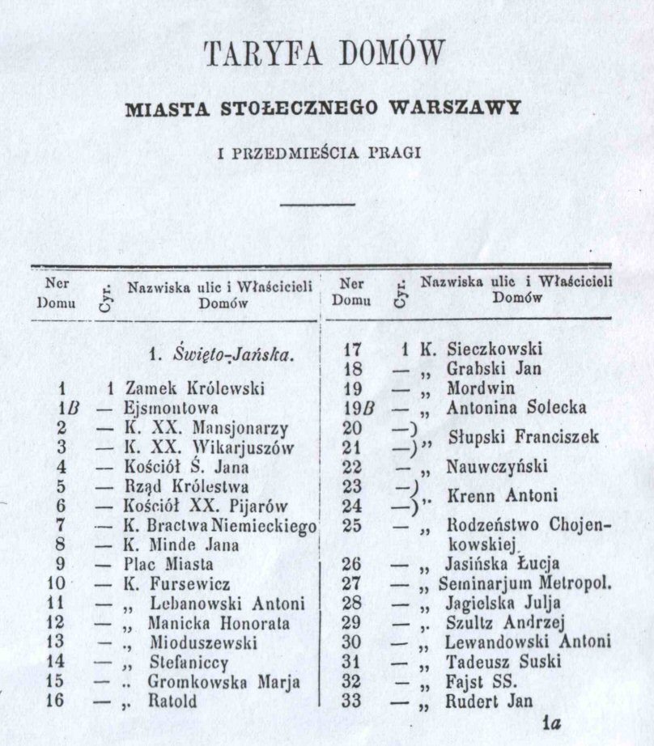

A "global text search" of the database by street name and number will provide the information that in 1869 and 1870, that property was owned by GOLDWASSER.
The Warszawa Research Group, in cooperation with JewishGen Inc., presents the Warszawa Homeowners' List database. This database contains over 20,000 entries from five homeowners' lists for Warszawa (Warsaw), the capital and largest city in Poland; and its suburbs of Kamionek, Praga, Nowo Praga, Szmilowizna (Szmulowizna). Today, these suburbs are part of the city proper.
Warszawa vital records (births, marriages and deaths) include the residence of each person identified (i.e. witnesses, parents, deceased, bride, groom) by "plot number". In most cases, they do not provide the actual street number or name. This database will enable a Warszawa researcher to identify the street name, house number and owner associated with the individuals in each vital record.
The Homeowner's Lists will also provide the cyrkul (district) for the plot number. Since vital records were registered by district, the knowledge of the district number will enable the researcher to identify the correct set of Jewish vital records (as microfilmed by the LDS Family History Library). Click here to review some typical research questions.
The dividing lines between districts varied over time. This is most evident on the Warszawa Homeowner's list database. While each inner-city district typically maintained their own vital record registration, there were periods of time when several districts combined their vital registration together. Maps of Warszawa indicating districts can be found on the Jewish Records Indexing - Poland website at http://jri-poland.org/warsaw/districts.htm.
This database has been compiled from five sources:
1869:
Przewodnik Warszawski informacyjno-adressowy
[Guide of Warszawa and Address Information] 1869.
1870:
Przewodnik Warszawski informacyjno-adressowy
[Guide of Warszawa and Address Information] 1870.
1852:
Taryffa Domów Miasta Warszawy i Praga
[House Tariff for the Town of Warszawa and Praga] 1852.
1864:
Taryfa Domów Miasta Stołecznego Warszawy i Przedmieścia Pragi
[House Tariff for the Capital City of Warszawa and the Surburb of Praga] 1864.
1897: Taryfa Nieruchomości Miasta Warszawy i Przedomies. Pragi, Nowej Pragi, Kamionka i Szmulowizny. [Real Estate Tariff for Warszawa and the Suburbs of Praga, Nowo Praga, Kamionka and Szmulowizna] 1897.
1869 and 1870 are in a combined database (5,659 entries).
fabryka wody gazowej Muszkata
(Muszkat's sparkling water factory)
The information was compiled from two lists in the book. The first was the alphabetical listing of the homeowners. The list provided the surname, given name and house number. The second list was a numerical listing of the house number. This list contained the plot number, street name, house number, owner's name and comments. In some cases, the spelling of the surname varied between the two lists for the same person and the database contains both spelling variations, separated by a slash mark "/".
In creating the database, the 1869 and 1870 list were compared. If the surname and the first initial of the given names matched in the two lists, then it was assumed that it was the same owner. All spelling variations of the surname were noted in the surname field and separated by a slash mark "/". The letter "I" and "J" were considered a match in comparing the first initial of the given name.

The 1852 and 1864 Homeowner's Lists were each created independently. The 1852 and 1864 lists contain 3,348 and 3,420 entries respectively. An image of the 1864 list is at the right.
The 1852 and 1864 lists are similar in content, with the following information being recorded:
The 1897 Homeowners list is one of the sections of a book titled Księga Adresowa Miasta Warszawy na 1897 rok. ["Warszawa Address Register for the year 1897"]. This database contain 8,076 entries from the 1897 book. The entire book has been electronically scanned, and is available for viewing in PDF format by clicking here. [Warning: This is avery large file – 37 MB]. The register contains names of residents, business directory, advertisements and the Homeowners list.
The 1897 Homeowners list database contains the following information:
An early known list of Warszawa Jewish Homeowners from 1815 was found at the AGAD (Archiwum Glówne Akt Dawnych), the Central Archives of Historical Records, in Warsaw. A copy of the list can be seen here. In some cases there are no surnames of the homeowner — just the given name and patronymic. The list also contains the cyrkuli (district), plot number, street name, the previous owner's surname, and notes on notarial documents.
An interesting entry in this 1815 list is the fourth entry, which contains the only female homeowner at the time: Judita (Yehudis) Jakobowiczowa. A picture of her, together with her husband Shmuel Zbytkower, appears in the Yiddish-language yizkor book Pinkas Varshe, published in Buenos Aires in 1955. This picture, with an English translation of sections of this book, is available on the JewishGen Yizkor Book website. The Warszawa neighborhood of "Szmulowizna" (which is listed in the 1897 Directory) was named after its founder, Szmul Jakobowicz Zbytkower (also know as Józef Samuel Sonnenberg), who lived from 1727-1801.
This database was compiled through the dedicated efforts of volunteers of the Warszawa Research Group. Many thanks to Rose Feldman, Max Heffler, Kate Hibel, Hadassah Lipsius and Lynn Stern, and to our hosts at JewishGen and their database team.
1. Before my grandparents came to America, they lived at 4 Franciszkanska Street. Who owned that property?

A "global text search" of the database by street name and number will provide the information that in 1869 and 1870, that property was owned by GOLDWASSER.
2. The Warszawa vital records were registered by districts. If I know my family lived at 4 Franciskanska Street, can I find out what district that was in?
A "global text search" of the database by street name and number will indicate that this address was also plot number 1808. In 1869 it was listed as being in district II, and in 1870 it was in district II & III. Since the 1852 and 1864 lists only identify the plot number and not the house number, an additional global text search by plot number 1808 will reveal that in the 1852 it was in district 4 and in 1864 it was in district 2.
3. I found a record in the LDS microfilms for my family that shows they lived at plot number 1808. What street is that on and who owned that property?
A "global text search" of the database by the plot number will yield a result showing the street name, house number and owners for the 1869 and 1870 homeowners' list.
4. Did my MUSZKAT and WINAWER family own any property in Warszawa in the years covered by the database?
A "surname" search of the database for the family surnames MUSZKAT and WINAWER yielded several results, including the fact that they owned a sparkling water factory.
The Warszawa Homeowners' Database is searchable via the All Poland Database.